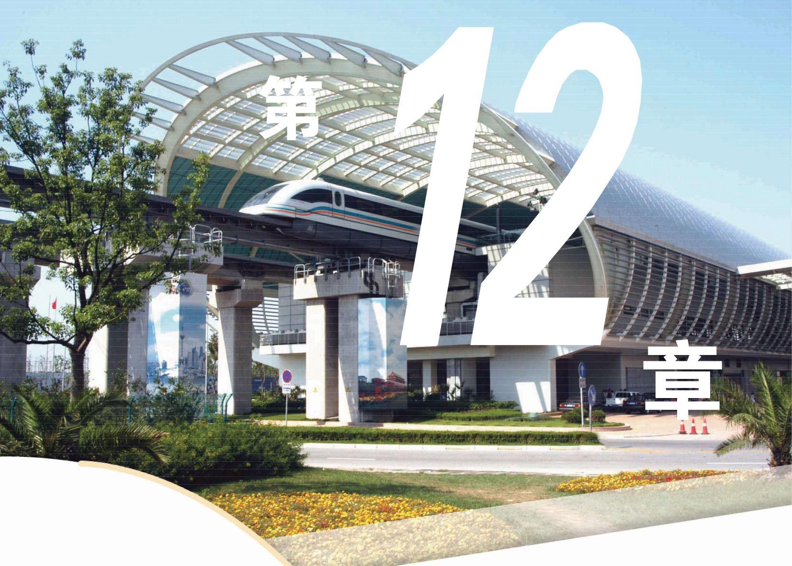
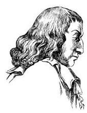

练习12.1(1) · 1
- 判断下面哪些是随机现象, 哪些是确定性现象, 并列举几个生活中的确定性现象与随机现象的例子.
(1)明天太阳升起；
(2)明天上海局部地区下雨；
(3)明年小明又大一岁；
(4)小明今天放学回家到路口时恰好碰到绿灯.
学生阅读版 / 沪教版高中数学
必修第三册
第12章概率初步 · 保留教材主线与原题
教材与正式教参整合

随机现象无处不在, 且与我们的生活息息相关. 它看似没有规律, 但实际上隐含着深刻的规律. 概率论就是研究随机现象背后所蕴藏的规律的数学理论. 它在现代社会中变得越来越重要, 在数学中的地位也越来越高. 在这一章中，我们将理解概率的意义，学习求解简单的概率问题. 尽管所涉及的数学实际上是相当初等的, 但第一次接触随机现象, 真正理解起来可能并不容易, 和学习以往的内容不同, 不仅要换一种思路, 而且要换一套语言.
概率是描述一个随机现象中某事件发生的可能性 (或者机会)大小的一种度量. 要理解概率，首先要理解随机现象或者随机性.
先看几个生活中常见的例子:
向上抛掷一枚硬币. 能够确定的是, 因为重力的作用, 它必定会落在地面上. 但是究竟哪一面朝上, 却是无法预知的.
在车流不大的高速公路上, 两地相距 . 上午 8 时从 地出发,以 的速度去往 地,那么我们可以肯定地说, 上午 9 时可以到达. 但如果上午 8 时从上海人民广场出发去上海浦东国际机场，由于市内堵车，我们很难准确预测什么时间可以到达.
如果将 1 万元存到某银行，年利率为 3%，那么一年后的利息收入必是 300 元. 但如果将此 1 万元买该银行的股票，那么一年后的收益却是不确定的.
人随着年龄增长慢慢变老, 这是确定无疑的. 但是观察 60 岁左右的人，会发现其衰老的程度很不一样，呈现出随机性.
由于随机性的存在, 我们无法准确地预测在一个随机现象中会出现什么样的结果, 然而, 对于随机现象, 我们是不是完全束手无策了呢? 答案是否定的. 尽管我们无法确切预测到结果, 但对出现某一结果的可能性大小还是有预期的, 而且通常可以得到其估计值. 例如, 抛掷一枚硬币, 人们对于可能出现的两种状态有相同的期待,也就是说两个面各自出现的可能性都是 ; 如果多次抛掷硬币, 人们会期待两个面出现的次数应该是差不多的. 又如, 我们虽然不能确切地知道明天是否会下雨, 但是借助气象研究, 气象台可以通过公布降雨概率, 对明天下雨的可能性大小作出预期, 供公众参考. 这说明, 人们相信随机现象中还是存在某种规律的, 找出这种规律就是概率论所要研究的目标.
概率描述随机现象中某些结果出现的可能性大小.
费马 (P. de Fermat, 1601-1665), 法国数学家，正式职业是律师. 费马与帕斯卡在 1654 年 7-10 月有 7 封关于分奖金问题的书信来往, 开启了概率论的研究.

帕斯卡 (B. Pascal, 1623 —1662), 法国数学家、 物理学家.
两人下棋,每局两人获胜的可能性一样. 某一天两人要进行一场三局两胜的比赛, 最终胜者赢得 100 元奖金. 第一局比赛 胜,后因为有其他要事而中止比赛. 问: 怎么分 100 元奖金才公平?
尽管 胜了第一局,但结果依然是不确定的, 都有胜的机会. 但因为 已胜一局,所以如果比赛继续下去, 胜的可能性更大. 因此, 按照最终取胜的可能性大小 (也就是概率) 比例进行分配是大家认可的一个公平分配方案, 从而问题归结于如何计算 各自取胜的概率.
历史上很多人考虑过这个问题，包括费马、帕斯卡、惠更斯 (C. Huygens)等, 他们从不同的角度得到了同样的答案, 说明该问题背后有着某种规律. 这些规律引起了数学家的兴趣, 由此开启了对概率论的研究.
现在, 你也来想一想, 看能否像 300 多年前的数学家那样运用对概率的直觉来回答这个问题. 等学完这一章, 我们再来解答这个问题.
(1)明天太阳升起；
(2)明天上海局部地区下雨；
(3)明年小明又大一岁；
(4)小明今天放学回家到路口时恰好碰到绿灯.
(1)今年冬天一定会下雪；
(2)今年我要参加高考，应该能考上大学.
学习概率论, 首先要学会概率论的一套语言. 由于概率论中的很多术语直接使用生活中的语言, 在学习的时候要格外注意它们在概率论与生活中使用时的语义区别, 其中最重要的三个术语是样本空间、事件与概率.
考察一个随机现象 ,首先要观察其中有哪些可能出现的结果.
样本空间中的基本事件须是互斥的， 即任何两个均不会同时发生.
例 1 写出下面随机试验的样本空间:
(1)抛掷一枚硬币，观察朝上的面；
(2)掷一颗骰子(每一面上分别标注数字 1、2、3、4、5、6 的质地均匀的小正方体), 观察朝上的点数;
按照习惯，在说到掷硬币或骰子时, 我们总是观察朝上的面和点数.
(3)从装有标号为 1、2、3 的三个球的袋子中依次取两个球 (第一次取出的球不再放回)，观察标号，考虑标号顺序；
(4)从装有标号为 1、2、3 的三个球的袋子中依次取两个球 (第一次取出的球不再放回), 观察标号, 不考虑标号顺序;
考虑标号顺序是指不同的顺序表示不同的结果, 例 如, (1，2)与(2，1)是两个不同的结果. 在不考虑顺序的情况下， (1,2)与(2,1)是一样的.
(5)连续掷一颗骰子，直到点数 6 出现为止，观察掷的次数；
(6)向一面墙随机掷飞镖，观察其落点.
例 2 掷一颗骰子，写出下列事件相应的样本空间的子集:
(1)点数 6 没有出现；
(2)出现偶数；
(3)点数不超过 2.
例 3 掷两颗骰子, 试表示其样本空间以及掷出的两个点数都是偶数这个事件所对应的子集.
例 4 写出抛掷两枚硬币的样本空间.
注意:对于同一个随机现象，由于观察结果的角度不同, 样本空间也不同, 如例 4 所示.
(1)抛掷 3 枚硬币；
(2)将 3 个不同颜色的球放入 3 个不同的容器中，但每个容器最多放 1 个球。
(1)1 没有出现； (2)出现奇数； (3)点数超过 2 .
(1)写出样本空间；
(2)写出两人恰好是一男一女这个事件所对应的子集.
(1)在空地上抛一石块，石块会下落；
(2)明天上午八时到九时之间，你会接到一个推销电话；
(3)买一张福利彩票，会中奖.
(1)全部出现正面向上是不可能的；
(2)至少有 1 枚出现正面向上是必然的；
(3)出现 50 枚正面向上、50 枚正面向下是不确定的.
A. 不可能事件； B. 必然事件;
C. 可能性较大的随机事件; D. 可能性较小的随机事件.
(1)学生甲明天竞选班长成功；
(2)两支足球队明天比赛，主场队取胜；
(3)若集合 满足 ,则 .
(1)含有白球; (2)至少含有 1 个黑球.
(1)写出样本空间；
(2)写出每个人的相邻之人总是异性这个事件所对应的子集；
(3)写出每个人的相邻之人至少有一个异性这个事件所对应的子集.